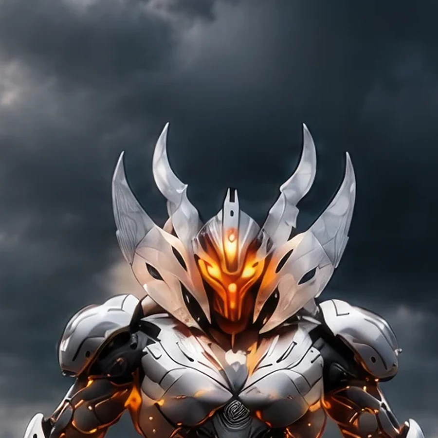

Field Observation
Ukon concealed a hostile green alien node along the left-middle side of the square. The subtle node demonstrates covert Synthbot infrastructure placement on Earth 1.
 ©
©
GENEZYS ARCHIVE · Synthbot
Silk Caster
Identity & combat record
Archive node 01 / 04

Archive record
Ukon spins threads no eye can see. Once the Cosmos Spiral settles over a battlefield, wounds refuse to close and energy bleeds away, round after round. Of all who signed the Accord, only Ukon's pilot seems patient. The web does the rest.
Combat signature
Spins threads through universal fabric: Enemies cannot be healed for 3 rounds and lose 40 Cosmara each round for 3 rounds.
Genezys 02:07 ™&©2026LEGIONS
Field intelligence
Archive node 02 / 04
FIELD REPORT // COVERT HOSTILE NODE

Mission successfulAdditional intelligence available
Field Observation
Ukon concealed a hostile green alien node along the left-middle side of the square. The subtle node demonstrates covert Synthbot infrastructure placement on Earth 1.
Environment
Object Analysis
Key Findings
Restricted visual records
Archive node 03 / 04

Motion archive
Archive node 04 / 04
Motion record not yet recovered